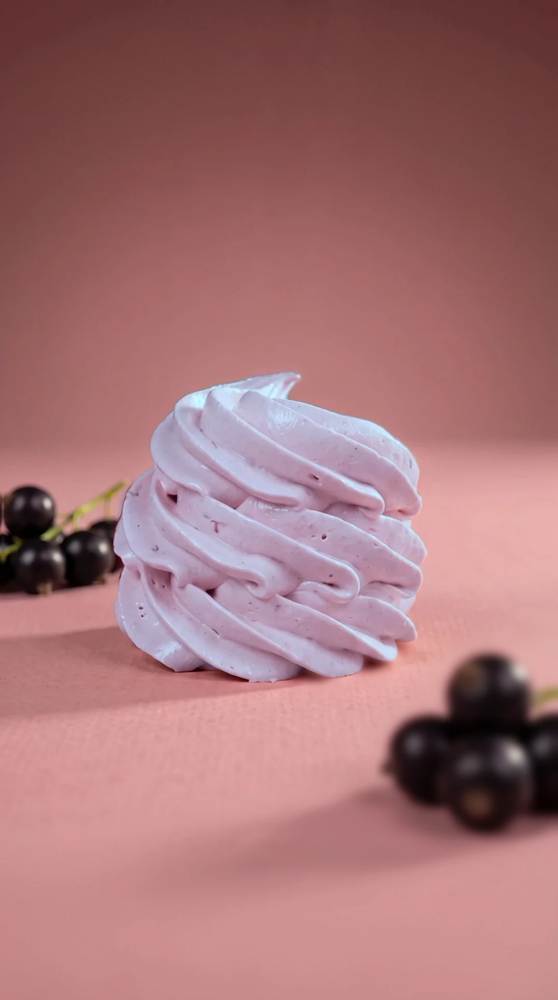
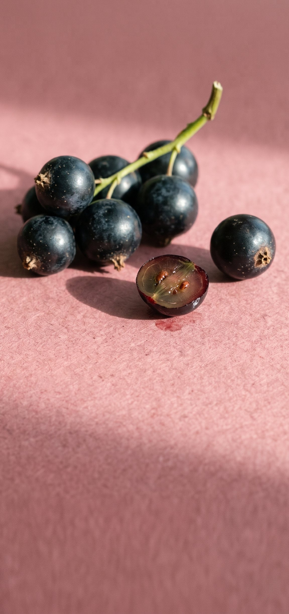
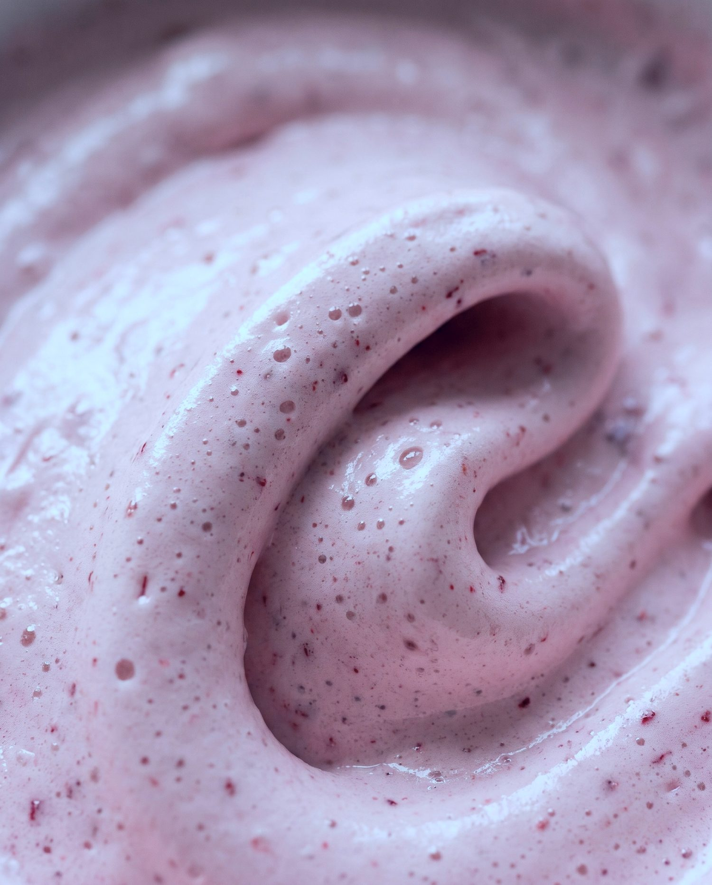
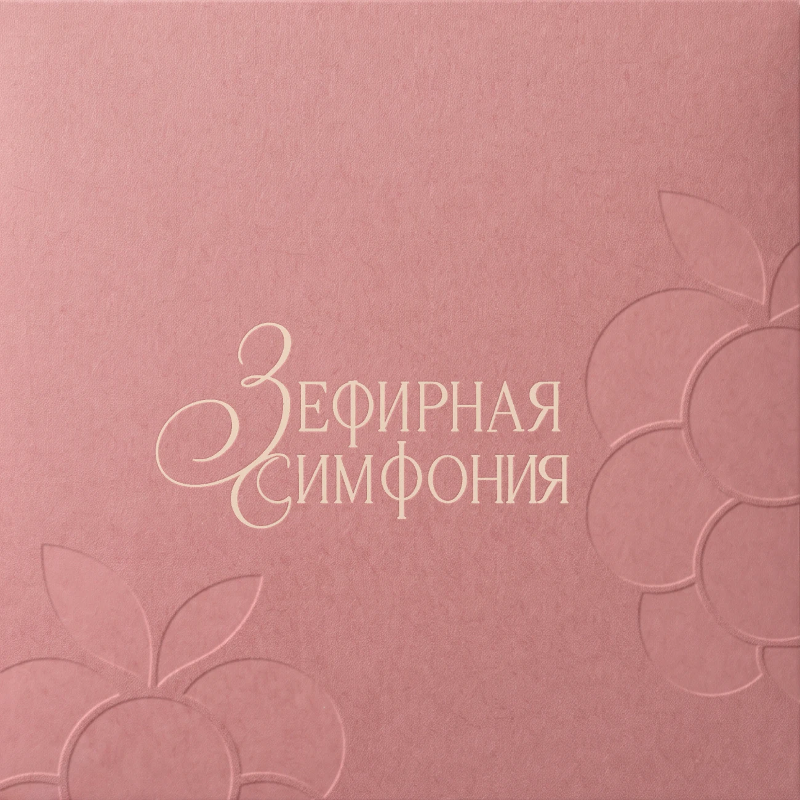
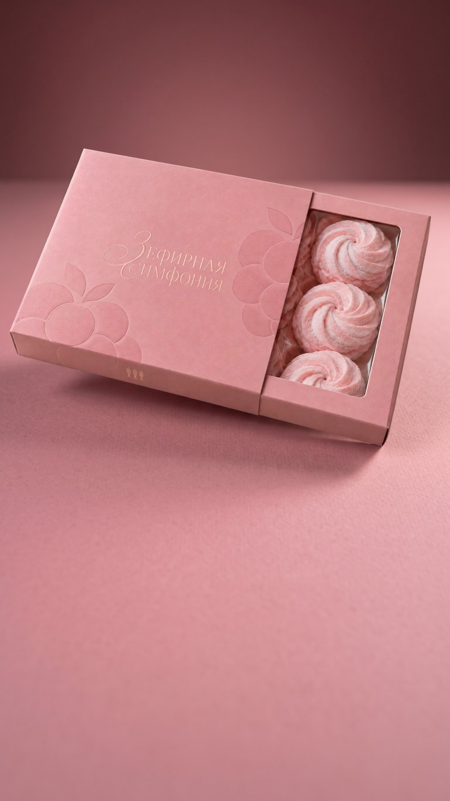
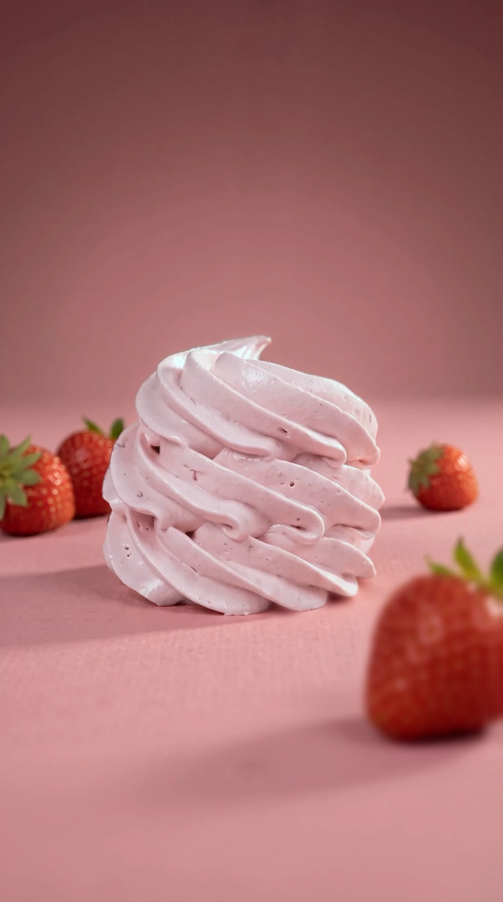

О вкусе
Нежная, из спелых ягод
Нежный зефир на яблочном пюре и спелой чёрной смородине.
Состав
Семь ингредиентов
Сахар, вода питьевая, смородина чёрная свежая, белок яичный, пюре яблочное концентрированное, агар, кислота лимонная
Белки 2,0 г · жиры 0,1 г · углеводы 70,9 г · 293 ккал
Коробка
Девять таких в коробке
9 штук · 360 г · срок годности 15 дней
750 ₽за коробку
 КаталогО насКорзина0
КаталогО насКорзина0